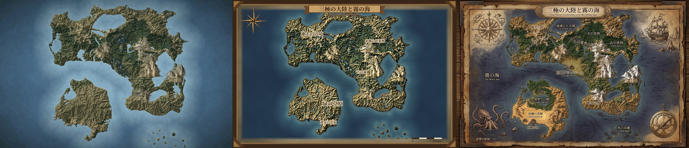
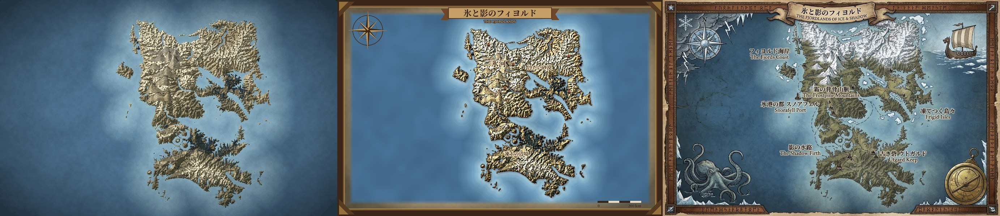
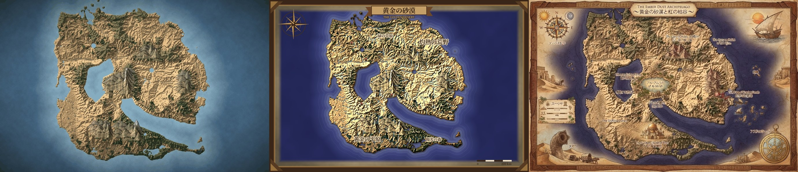

Gemini風の特徴をプログラムで再現できるか(検証)
概要: ユーザー指示(2026-11-18)「下地をそのまま原画にしてGeminiにファンタジー風の絵を描かせた。ファンタジーの絵の特徴をプログラムでどこまで再現できるか、まず検証する」の第1回です。Geminiが描いた10枚のうち3枚(世界5・6・7)について、同じ元の地図から、プログラムだけでGemini風の飾りを描き、並べて比べました。結論: 地図の「構造的な飾り」はプログラムで描ける。「絵」(怪物・船・城・手描きの山)は描けない。
比べた3枚(左=段階12の元 / 中=プログラムで再現 / 右=Gemini)

絵番号 E039世界5(大陸3つ)

絵番号 E040世界6(フィヨルド)

絵番号 E041世界7(砂漠)
プログラムで描いたもの(再現できた)
- 羊皮紙の質感・縁の焼け・四隅の飾り・二重の枠
- タイトルの帯(リボン)・縮尺バー・方位記号(8方位の簡易版)
- 海: 岸から離れるほど濃くなる色、岸の光、岸に沿った波線、岸の影
- 川: 標高の流れ込みから自動で引いた(細い線)
- 地名(地面の種類から名前を当てた仮のもの)・都市の記号(仮・位置は川の近くからの無作為)
- 地面の色調整(暖色にして、コントラストを少し上げた)
描けなかったもの(絵に頼る)
- 海の怪物(タコ・大蛇)・船・天文観測器・砂虫・雷雲・氷塊などの場面の絵
- 城・遺跡・都市の絵(Geminiは一つずつ描き分けている。私の記号は小さな家の印だけ)
- 手描きらしい山と雪山の画風(再現版の山は、今も下地から浮いて見える)
- 日本語と英語を併記し、曲線に沿わせた地名の組版・枠のルーン文字などの意匠(図案としては描けるが、今回は未実装)
数字での比較(3枚・画像全体)
| 世界 | 版 | 明るさ | 彩度 | 細部の量 | 輪郭の密度 | 色の近さ(パレット差) | 色分布の重なり |
|---|---|---|---|---|---|---|---|
| 世界5(大陸3つ) | 段階12 | 97.9 | 92.2 | 6.24 | 0.106 | 17.9 | 0.219 |
| 再現版 | 77.5 | 114.7 | 11.45 | 0.125 | 8.6 | 0.482 | |
| Gemini | 84.3 | 87.6 | 13.29 | 0.209 | — | — | |
| 世界6(フィヨルド) | 段階12 | 104.5 | 96.3 | 6.4 | 0.078 | 10.0 | 0.721 |
| 再現版 | 111.4 | 110.2 | 10.23 | 0.098 | 12.6 | 0.578 | |
| Gemini | 109.0 | 79.8 | 13.71 | 0.178 | — | — | |
| 世界7(砂漠) | 段階12 | 105.4 | 100.4 | 8.11 | 0.128 | 15.9 | 0.268 |
| 再現版 | 85.1 | 121.5 | 14.55 | 0.141 | 13.9 | 0.546 | |
| Gemini | 112.3 | 103.6 | 14.64 | 0.216 | — | — |
読み方: 細部の量・輪郭の密度は、Geminiに近いほど「絵として描き込まれている」。パレット差は小さいほど、色分布の重なりは大きいほど、Geminiの色に近い。全画像を同じ大きさ(768×512)にして測った。
読み取れること
- 細部の量: 段階12(6.2〜8.1)→再現版(10.2〜14.6)→Gemini(13.3〜14.6)。飾りと川と文字で、Geminiにかなり近づいた(世界7はほぼ同じ)。
- 輪郭の密度: 再現版(0.10〜0.14)はGemini(0.18〜0.22)に届かない。Geminiは、文字・絵・枠の線が多い。
- 色: 世界5と7は近づいた(色分布の重なり 0.22→0.48、0.27→0.55)。世界6(フィヨルド)は、元の段階12の方が近く(0.72)、再現版は悪化した(0.58)。海の色の決め方が、世界によって合う・合わないがある。
限界・未確認
- 海の色(3世界)は、Geminiの色を見て私が決めた。つまり、色の近づきは「Geminiに合わせた」結果で、新しい世界で自動に合う保証はない。
- 3枚だけの検証で、画像全体の数字(枠・飾りも含む)。人が見た印象とは別。
- Geminiの絵と元の地図の位置合わせ(陸と海の判定)は、2回試みたが、羊皮紙の余白を陸と誤判定して失敗した。このため、土地ごとの色(森・砂漠など)の対応は、測れていない。
- 山が浮く問題は、今回は直していない。次の検証対象。
- Geminiの10枚は、形や海岸線も少し描き変えている(元データとは完全には一致しない)。
コード: gstyle_gen.py(描画)/grun_gen.py(帯・地名・縮尺)。